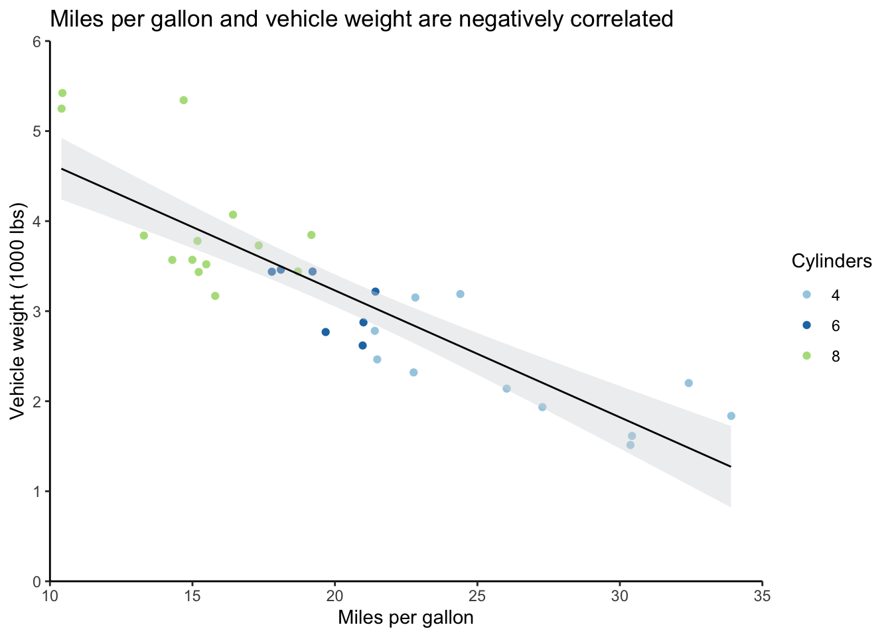
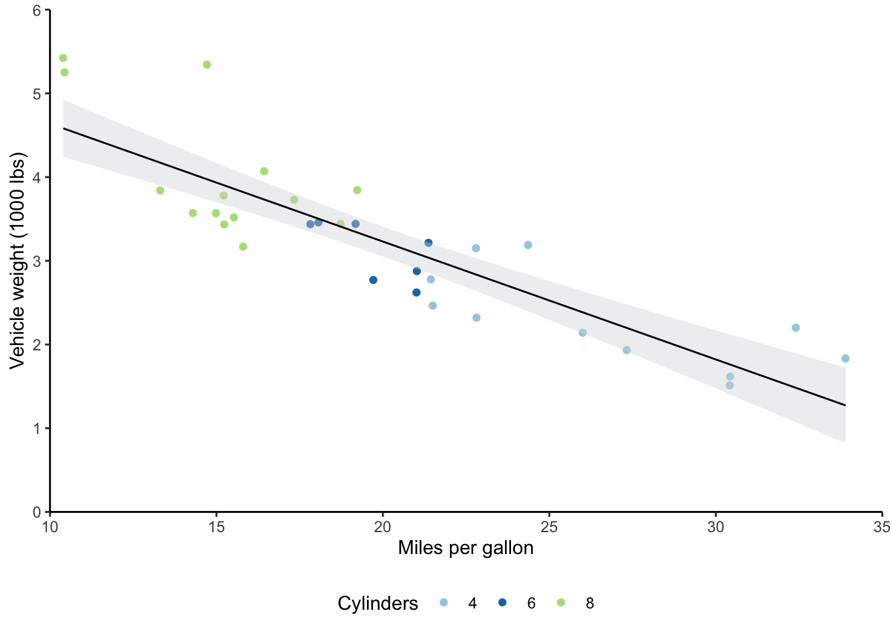
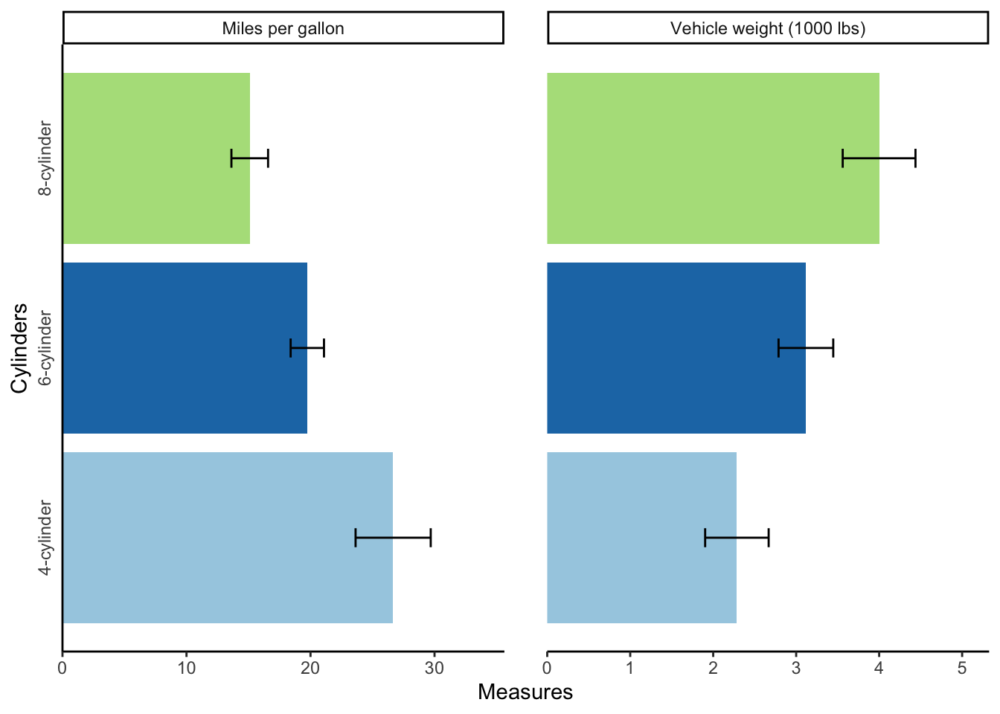
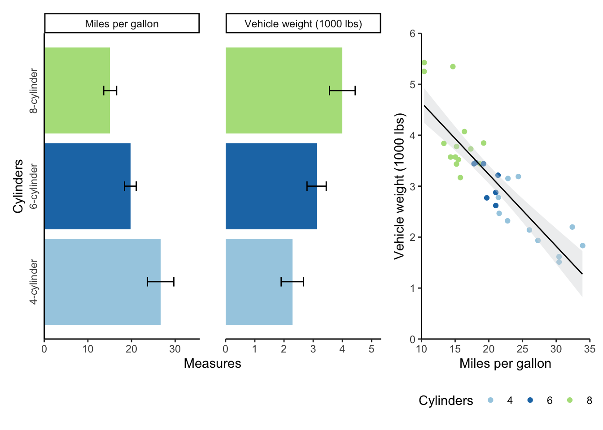

Chapter 9 Supplementary materials
9.1 Beginner R
- Basic R functionality
- Reading in data
- Tidy R philosophy
- Manipulating data with core
tidyrfunctions
9.1.1 Basic R functionality
- Variables
- Functions
- Operators
9.1.2 Variables
The way R stores your information will determine the kinds of functions/operators you can use
- Data: dataframes
- Values: lists, vectors, matrices, etc.
# Variables can be numbers, strings, etc.
some_val <- 200
other_val <- TRUE
# Variables can also be lists of numbers, strings, etc.
a_list <- c("a", "b", "c")
# We can also make dataframes (which are essentially special lists)
a_dataframe <- tibble(column_1 = 1:3,
column_2 = a_list)9.1.3 Functions
Functions take a certain number and certain types of “arguments”
baseR functions: part of downloading R- Packages: need to be installed, then loaded
install.packages(package)once (or to update package)library(package)every R session
Use Help window or ?package to check argument names, types, and defaults
- Named arguments without values are required (and user-defined)
- Named arguments with values show defaults
- Elipses mean that you can add other optional arguments
# file: required
# header = TRUE: default
# ...: other potential arguments, like stringsAsFactors = FALSE
read.csv(file, header = TRUE, sep = ",", quote = "\"",
dec = ".", fill = TRUE, comment.char = "", ...)9.1.4 base R
# base R function
# Count the number of rows in this dataframe
nrow(a_dataframe)## [1] 3# If I give nrow() too many arguments, it will throw an error
nrow(a_dataframe, a_list)# If I give it the wrong kind of argument, it will just return NULL
# Some functions won't run at all with wrong kind of argument
nrow(a_list)## NULL9.1.5 Packages
# scholar package
library(scholar)
# get_publications function
# Pull publications from Google Scholar for Marie Curie
get_publications("EmD_lTEAAAAJ&EmD_lTEAAAAJ&") %>%
dplyr::filter(cites > 30) %>%
distinct(title, .keep_all = TRUE) %>%
select(author, title) %>%
head(2) %>%
kable()| author | title |
|---|---|
| E Curie | Madame Curie |
| M Curie, S Mme | Curie |
9.1.6 Operators
- Relational: >, <, ==, !=, <=, >=
is.na,exists, etc. will return TRUE/FALSE valuesgrep,filter,str_detect, etc. use TRUE/FALSE values
- Logical: !, &, &&, |, ||
- Arithmetic
9.1.7 Reading in data
General parameters for csv files
read.csv("file_name.csv",
header = TRUE,
stringsAsFactors = FALSE,
check.names = FALSE,
na.strings = "")Avoid special characters (including spaces) in file names, directories, and column headers!
readxlpackage for Excel spreadsheets- APIs for direct access to online data
qualtRicspackage for Qualtrics dataggmappackage for Google services (geolocation data)
read_tablefromreadrpackage for text files
9.1.8 Tidy R philosophy
- One variable per column
- One observation per row
9.1.9 Manipulating data with tidyr
%>%: pass the results of one function on to anotherselect: choose columns by namemutate: add/change columnsfilter: filter for (or out) rowsgroup_byandsummarise: perform operations on groups of datagatherandspreadpivot_longerandpivot_wider: condense multiple columns into one or the inverseseparateandunite: split a column into multiple or the inverse
9.1.10 Other helpful tidyr functions
slice: choose a rowpull: choose a column- Helper functions for
select(e.g.,contains) joinfamily of functions: combine datasets based on a shared unique identifierunion: combine datasets by rows (column names must be the same)replace_na/drop_na: alter/remove rows with NA values
9.1.11 Helpful base R functions
rbindandcbind: add rows/columnsnrowandncol: count rows/columnsunique: pull unique values- Indexing with
var$columnandvar[row, column] whichwith column/row indexing
9.1.12 Other packages and functions
tibblepackage for dataframes withtibblekableExtraforkabletablesggplot2package for graphs (cheat sheet here)factorfor ordering text labels in graphs- Use
na.rm = TRUEargument (e.g., inmean) to remove NA values from calculations
9.2 Intermediate R
- Dealing with free-response text
- Dynamic variable creation and reference
- Helpful functions
- Other tips
9.2.1 Free-response text
- Regular expressions (cheat sheet here)
- Pattern matching
- Return position/value of elements that match a pattern:
grep,agrep - Return TRUE/FALSE:
grepl,agrepl,str_detect - Change a pattern:
sub,gsub,replace - Return position of pattern for all elements:
regexpr,gregexpr,regexec
- Return position/value of elements that match a pattern:
- Use
perl = TRUEargument to handle especially complex patterns
# List of elements
fruit <- c("apple", "banana", "pear", "pinapple")
# grep position
grep(pattern = "le", x = fruit)## [1] 1 4# grep value
grep(pattern = "le", x = fruit, value = TRUE)## [1] "apple" "pinapple"# agrep (can also specify value = TRUE)
agrep(pattern = "le", x = fruit, max.distance = 0.1)## [1] 1 3 4# regexpr
# match.length attribute gives starting position of match
# index.type attribute gives length of matched text
regexpr(pattern = "le", text = fruit)## [1] 4 -1 -1 7
## attr(,"match.length")
## [1] 2 -1 -1 2
## attr(,"index.type")
## [1] "chars"
## attr(,"useBytes")
## [1] TRUE9.2.2 Dynamic variables
# Variables
vals <- rep(1:3, 3)
name <- "assign_example"
# Assign values to variable name
assign(name, vals)
# Use the variable as usual
assign_example## [1] 1 2 3 1 2 3 1 2 3# You can also get the new variable from the name
get(name)## [1] 1 2 3 1 2 3 1 2 3# You can add to this variable dynamically as well
assign(name, c(get(name), 4:6))
# New output
assign_example## [1] 1 2 3 1 2 3 1 2 3 4 5 69.2.3 Helpful functions
apply,lapply,sapply,tapplysourcevariables from R scripts%notin%and%in%(compared to != and ==)
# Example using apply: go across columns of dataset
# and substitute characters
language <- apply(language, 2,
function(x) gsub("\\\\", "", x, fixed = TRUE))
# Source other sripts
source("data_cleaning.R", local = TRUE)
# Helper function
"%notin%" <- Negate("%in%")
# Example from processing pipeline for Qualtrics data
unusable <- c("0","00","107")
dat %>% dplyr::filter(Progress==100 & ID %notin% unusable)9.2.4 Other tips
- Store
ggplot2parameters in alist listvs.c
9.3 Graphing with ggplot
Now for some general tips on using ggplot. I’ll go over the following topics:
- Formatting
- Layering plot objects
- Saving
ggplotfunctions in lists - Color palettes
colorvs.fill- Using the
themefunction
- Visualization
- Using
Rmiscfor error bars - Using
patchworkto combine multiple plots
- Using
9.3.1 Formatting
Recall the scatter plot from Section 5.3.2. If you’re playing around with this code yourself, remember that we had to convert cyl to a factor so that R would treat it as a discrete rather than a continuous variable.
# Output scatter plot
mtcars_scatter
A major aspect of ggplot that you should be aware of is that the plots are built in sequence.
In the graph above (the code also appears below), ggplot(mtcars) came first, which just set up a blank graph, then there’s geom_jitter, which added the wt and mpg data and point colors based on the cyl variable, and so on.
If I wanted the regression line from geom_smooth to appear beneath the points rather than on top of them, I could’ve just reordered the function calls.
This will also help you troubleshoot if you have issues outputting graphs; just comment out individual plot objects, being careful not to leave any dangling plus signs, and rerun to find the problem.
This functionality also means that you can save several layers in a list to apply them easily to multiple graphs. This can save you time and effort when you want to have a consistent look across different graphs; just update a particular parameter in your list once, and then it’ll apply across your graphs.
Some functions, like labs, support this layering very well by allowing multiple calls to the same function.
Others, like scale_y_continuous, will override previous calls in the same graph (you’ll get a warning message when this happens).
You’ll notice that I have to put commas in between each function in the list rather than plus signs.
I also have to save these in a list(rather than with c).
# Create list of specifications
format_list <- list(scale_y_continuous(expand = c(0,0), limits = c(0,6)),
scale_x_continuous(expand = c(0,0), limits = c(10,35)),
scale_color_brewer(type = "qual", palette = "Paired"),
theme_classic(),
labs(y = "Vehicle weight (1000 lbs)",
x = "Miles per gallon",
color = "Cylinders"))
# Create scatter plot
# Move legend to the bottom
mtcars_scatter <- ggplot(mtcars) +
geom_jitter(aes(mpg, wt, color = cyl)) +
geom_smooth(formula = y ~ x, aes(mpg, wt), method = "lm", se = TRUE, level = 0.95,
fill = "#d7d8db", color = "black", size = 0.5) +
format_list +
theme(legend.position = "bottom")
# Output scatter plot with new legend position
mtcars_scatter
You’ll want to be familiar with the color brewer palettes that I used here.
The website I’ve linked allows you to play with the different options and choose ones with particular characteristics, like color blind-friendly palettes.
You can use the scale_color/fill_brewer functions with ggplot to apply these color palettes.
Relatedly, there’s a difference between setting fill and color options in ggplot.
Generally, scatter plots get color settings, while bar plots get fill settings.
If I’d set fill = cyl in geom_jitter, I would’ve gotten a legend with the three cylinder types, but the colors of the points wouldn’t have changed.
Similarly, if I’d used scale_fill_brewer rather than scale_color_brewer, the colors of the points would still have been the R defaults (or you would get an error, depending on the data type).
Lastly on formatting, you’ll want to become familiar with the theme function as your graphs increase in complexity.
The description for this function says it best: “Themes are a powerful way to customize the non-data components of your plots: i.e. titles, labels, fonts, background, gridlines, and legends.”
I typically layer theme_classic with several theme specifications.
Search ?theme in your R console or Help window for the full list of parameters.
9.3.2 Visualization
I often need to make bar graphs to present data.
I also tend to want to include error bars on these bar graphs.
There are different error bars you can calculate, but I tend to have error bars that represent 95% confident intervals around my means.
You’ll first need to install the Rmisc package to do this, then transform your data into a long format.
I also turned the categorical variables that I cared about into factors.
This allows you to control the exact label text and order in your graph.
Then, I used the summarySE function to create a table with the means and confidence intervals.
# Create long-form data for creating error table
# Mutate columns to create factors with particular labels
# This is harder to change once you're at ggplot stage
mtcars_long <- mtcars %>%
select(mpg, wt, cyl) %>%
pivot_longer(cols = -cyl, names_to = "variables", values_to = "measures") %>%
mutate(cyl = factor(cyl, levels = c(4, 6, 8),
labels = c("4-cylinder", "6-cylinder", "8-cylinder")),
variables = factor(variables, levels = c("mpg", "wt"),
labels = c("Miles per gallon", "Vehicle weight (1000 lbs)")))
# Make error table
mtcars_error <- summarySE(mtcars_long,
measurevar = "measures",
groupvars = c("cyl", "variables"))
# Output error table
mtcars_error## cyl variables N measures sd se ci
## 1 4-cylinder Miles per gallon 11 26.663636 4.5098277 1.3597642 3.0297434
## 2 4-cylinder Vehicle weight (1000 lbs) 11 2.285727 0.5695637 0.1717299 0.3826381
## 3 6-cylinder Miles per gallon 7 19.742857 1.4535670 0.5493967 1.3443253
## 4 6-cylinder Vehicle weight (1000 lbs) 7 3.117143 0.3563455 0.1346860 0.3295647
## 5 8-cylinder Miles per gallon 14 15.100000 2.5600481 0.6842016 1.4781278
## 6 8-cylinder Vehicle weight (1000 lbs) 14 3.999214 0.7594047 0.2029595 0.4384672Now I can make a bar graph with this error table.
My main ggplot object uses the cyl column and plots the means, while the geom_errorbar object uses the confidence interval (ci) column to create the error bars.
You’ll also notice that I changed the width of the error bars and their position, so that they were centered over the bars.
# Create bar graph
mtcars_bar <- ggplot(mtcars_error, aes(cyl, measures, fill = cyl)) +
geom_bar(position="dodge", stat="identity") +
geom_errorbar(aes(ymin = measures - ci, ymax = measures + ci),
width = 0.1, position = position_dodge(0.9)) +
coord_flip() +
scale_y_continuous(expand = expansion(mult = c(0, .2))) +
scale_fill_brewer(type = "qual", palette = "Paired") +
theme_classic() +
facet_wrap(~ variables, scales = "free_x") +
labs(y = "Measures",
x = "Cylinders",
fill = "Cylinders") +
theme(axis.ticks.y = element_blank(),
legend.position = "none",
panel.spacing.x = unit(1.5, "lines"),
axis.text.y = element_text(angle = 90, hjust = 0.5))
# Output bar graph
mtcars_bar
Sometimes, you’ll want to output multiple graphs with a particular layout.
The patchwork package allows you to do this easily.
The syntax is very similar to ggplot syntax, in that you add plots together with a plus sign.
You can also add a plot_layout object to change aspects of the plots, like their widths.
mtcars_bar + mtcars_scatter + plot_layout(widths = c(2, 1))
9.4 Practice materials
You can find practice materials for R Markdown and R here. You’ll want to clone this repository or download the following documents/folders:
- brownbag_activity.Rmd
- data_cleaning.R
- apa.csl
- /data